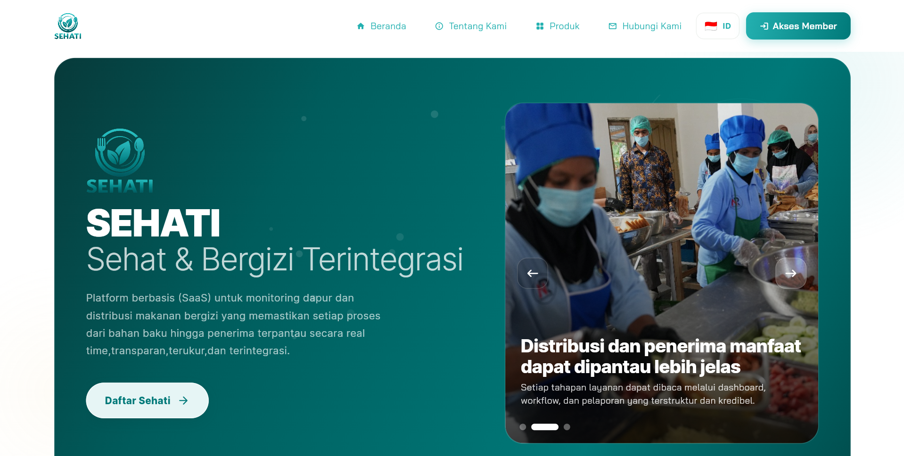

Ringkasan Eksekutif
Operasional layanan skala besar menuntut koordinasi yang rapi antar tim, akurasi data kehadiran, kontrol stok, kepatuhan prosedur kerja, dan transparansi transaksi. Tantangan umum yang muncul adalah proses manual yang tersebar, keterlambatan pelaporan, dan sulitnya melacak aktivitas antar unit secara real-time.
SEHATI dirancang sebagai single source of truth untuk menghubungkan proses operasional, administrasi, dan pengambilan keputusan. Dengan modul yang saling terintegrasi, sistem ini membantu organisasi menjaga efisiensi kerja, kualitas eksekusi, dan akuntabilitas data dari level staf hingga pengelola.
Pilar Utama Ekosistem SEHATI:
- Kontrol Operasional: Pemantauan aktivitas, pemesanan, dan distribusi dalam satu alur kerja.
- Disiplin & Kepatuhan: Dukungan absensi, jadwal, approval, serta checklist SOP yang terdokumentasi.
- Transparansi Data: Riwayat aktivitas, laporan, dan status proses dapat ditelusuri dengan mudah.
- Efisiensi Administrasi: Pengelolaan payroll, master data, logistik, dan keuangan lebih konsisten.

Dashboard Utama SEHATI